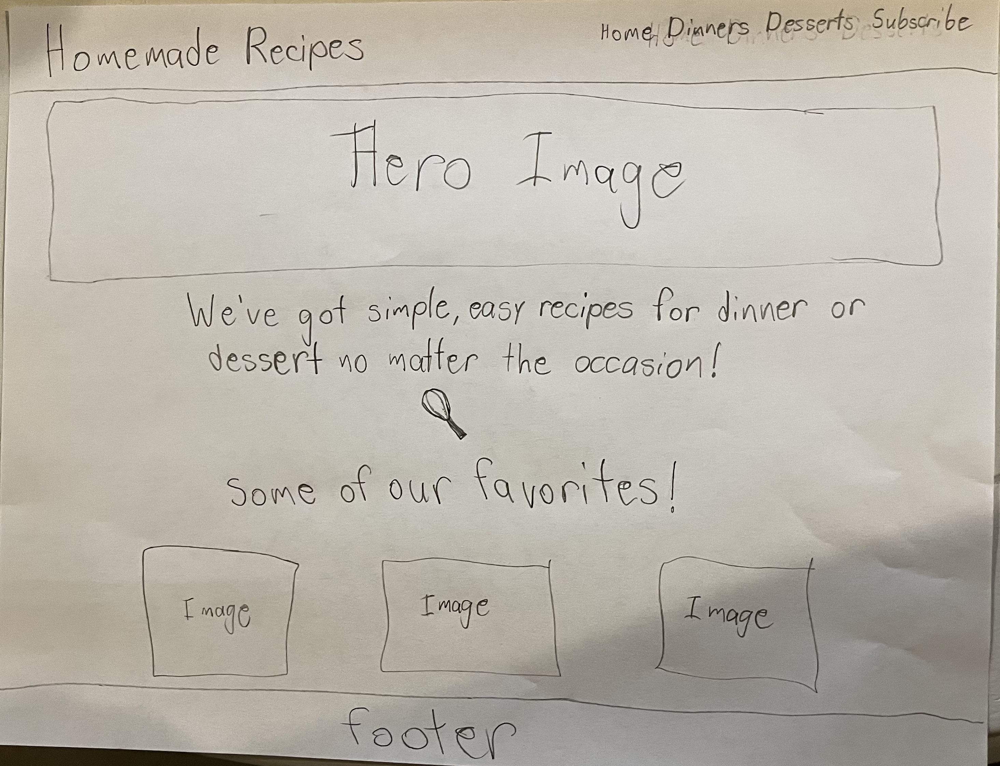
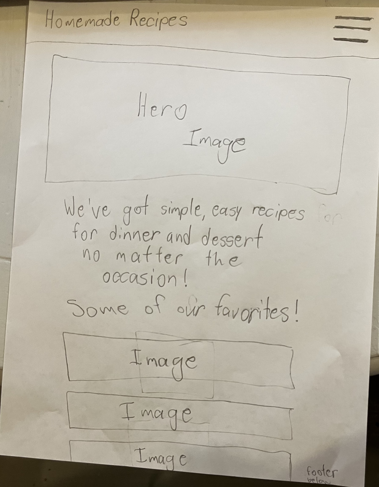

Homemade Recipes
Reason I choose this name - Because the recipes that will be on this site can be made at home with the ingredients you have at home
This site provides easy recipes for dinner and desserts, there will also be a form page where you can opt to get emails about daily recipes to try.
Main Background - F1F2E3
header/text color - 363537
button background - 59534A
accent color - 5BC3EB
headers - Delius Swash Caps
body - Noto Sans Mono
Card text - Knewave
Recipe Card Example
Desktop Wireframe
Mobile Wireframe
